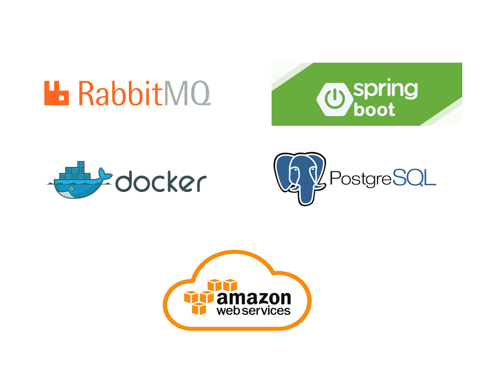

Sobre
Graduando do curso de tecnologia Análise e Desenvolvimento de Sistemas (ADS), apaixonado por programação, games e Heavy Metal. Começou a programar desenvolvendo games com o Unity 5, utilizando C#. Decidiu tornar sua paixão em carreira em 2019, estudando várias tecnologias (C, C++, C# e Python) antes de escolher Java e Javascript como principais linguagens. Tem muita sede de conhecimento e pretende continuar aprendendo novas tecnologias, não se limitando apenas as atuais.
Projetos Web
Gerenciador Escolar MVC
Java Spring Boot / Thymeleaf / MongoDB / Bootstrap

Projeto onde é possível gerenciar professores, alunos, disciplinas e turmas. consiste em uma
aplicação MVC, que utiliza Thymeleaf (views), autenticação com
Spring Security e banco de dados NoSQL (MongoDB).
Para deploy desse projeto, foram utilizados o AWS Beanstalk e MongoDB Atlas.
Simulador Eleitoral
Java Spring Boot / React / Docker / MySQL / Bootstrap

Projeto que simula um sistema eleitoral. Nele, é possível cadastrar candidatos, votar e fazer apuração de votos. Foi desenvolvido com intuito de pôr em prática conhecimentos adquiridos em vários cursos e bootcamps. O back-end da aplicação foi desenvolvida com Java (Spring Boot), utilizando-se conceitos de validação de dados, paginação e boas práticas. O front-end foi feito em React, com Hooks, React-Router, ContextAPI e o banco de dados escolhido foi MySQL.
Sistema Logístico
Java Spring Boot / Angular 12 / Docker / PostgreSQL / Bootstrap

Projeto que simula operações logísticas. Nele é possível cadastrar/receber produtos, gerar separações e conferir/expedir (pedidos). É constituído de duas partes: Front-end com Angular 12 e back-end com Java 11 (Spring Boot). Utiliza banco de dados PostgreSQL em ambiente Docker.
Microsserviço de email
Java Spring Boot / RabbitMQ / Docker / PostgreSQL / SES AWS

Consiste em um microsserviço que recebe dados de um email (via requisição HTTP ou RabbitMQ) e o envia ao destinatário, utilizando o SES da AWS. As informações sobre o email, como o corpo e status, são salvos no banco de dados (PostgreSQL). O projeto utiliza um conteiner do Docker para subir o banco de dados, com um arquivo docker-compose.yml.
Games (Unity 5 / C#)
Cursos / Conhecimentos
Formação:
Graduado em Análise e Desenvolvimento de Sistemas.UNICESUMAR - 2019 / 2022
Tecnologias
- Java / Spring Boot
- Javascript / NodeJS
- React
- Angular 2+
- Docker
- MySQL
- PostgreSQL
- MongoDB
Conhecimentos
- Programação orientada a objetos
- Básico de programação reativa
- Básico de Microsserviços
- Padrões de projetos
- Padrão REST
- Testes automatizados
Cursos e Bootcamps:
- Microsserviços em Spring Cloud com Java - Digital Innovation One.
- Implementando Collections e Streams com Java - Digital Innovation One.
- Desenvolvendo um sistema de gerenciamento de pessoas em API REST com Spring Boot - Digital Innovation One.
- Desenvolvimento de aplicações para internet com ReactJS - Digital Innovation One.
- Criando aplicações web com Spring Web MVC - Digital Innovation One.
- Programação reativa com Spring Web Flux - Digital Innovation One.
- Aprenda a aplicar testes com Java - Digital Innovation One.